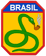
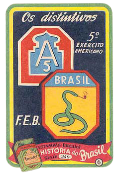

Como tudo começou...
Atualmente, o exército brasileiro vive momentos de paz. Não há guerra declarada contra qualquer nação estrangeira. Ele tem atuado em missões de proteção e apoio e na fiscalização de fronteiras, no combate ao tráfico. Porém, sua história se inicia com batalhas violentas.
O exército brasileiro começou em 1548, quando Dom João III quis criar um governo com capital em Salvador e um exército, para combater ataques de holandeses, franceses e outros países a florestas brasileiras para a exploração do pau-brasil e outras árvores e minérios (PEDROSA, J. F. Maya. A Catástrofe dos Erros).
Desde então atuou em vários cenários de guerra, defendendo o Brasil de invasores europeus, além disso, o exército enfrentou a ameaça das rebeliões de índios e negros. Nessa época também foi chamado um militar Alemão chamado Guilherme de Schaumburg-Lippe para ajudar o exército imperial a ser mais profissional.
Em 15 de novembro de 1889 a monarquia foi derrubada pelo exército com a Proclamação da República e o marechal Deodoro da Fonseca assume a posição de presidente do Brasil república (com o marechal Floriano Peixoto como vice), criando a República da Espada.
esse governo chegou ao fim em 1890, quando os barões do café foram eleitos para a presidência com a criação da República Café com Leite que durou até 1930.
Durante esse mandato dos barões, o exército brasileiro participou da Guerra de Canudos onde combateu a população da cidade de Canudos no sertão brasileiro, Guerra do Contestado que foi a disputa contra os rebeldes que queriam derrubar a República Café com Leite, e a primeira guerra mundial.
Doze anos depois da guerra mundial, o Brasil começou uma disputa entre estados que por muitos chegou a ser considerado uma guerra civil, que o candidato mineiro a presidênciaAntônio Carlos Ribeiro de Andrada.
Getúlio ficou mais de 15 anos como presidente de um Brasil quase que fascista, pois não havia tanto apoio do exército, e mantinha conversas constantes com Hitler, líder do Nazismo na Alemanha, e Mussolini, líder fascista da Itália. Adolf Hitler e Benito Mussolini eram aliados entre si e também a Portugal, Espanha (ambos os países ibéricos, tiveram sua política e país mudados pela Alemanha e Itália) e o Japão que teve ajuda dos alemães na conquista de uma parte da China, até mesmo fizeram uma aliança com o Brasil antes do início da segunda guerra mundial.
A segunda e mais violenta guerra que já existiu no mundo havia começado por causa das invasões nazistas à Tchecoslováquia, Áustria e Polônia, onde a URSS (União das Repúblicas Socialistas Soviéticas), aliada a França, Inglaterra (chamados Aliados), entrou em conflito com o Eixo (Alemanha, Itália, Japão, Espanha e Portugal) dando início a guerra.
A partir de começado a guerra o Brasil, com soldados muito mal treinados e equipamentos ruins comparado aos outros exércitos, além de ter uma péssima posição para ajudar a Alemanha e Itália na guerra, rompeu o trato com o Eixo, mesmo assim as duas alianças convidaram os brasileiros a participar da guerra, e Vargas respondeu que “o Brasil só vai entrar se uma COBRA FUMAR e uma EMA VOAR”.
Depois de o exército alemão destruir as trincheiras francesas e invadir o Norte da França conquistando Paris, Hitler ou Führer, como era chamado em alemão, mandou seu aliado Japão atacar a base militar estadunidense de aviões e navios militares, ou como é chamado de Pearl Harbor, fazendo os Estados Unidos entrar na guerra se aliar aos Aliados.
O exército dos EUA saia pelo Atlântico com porta-aviões para atacar os alemães, mas uma barreira náutica construída por Hitler os impediu de chegar à Europa. Então Franklin Delano Roosevelt, atual presidente estadunidense, ordenou que eles atacassem o Japão pelo Pacífico, como o Pearl Harbor que servia para abastecer os aviões estadunidenses, havia sido destruído, tiveram de ir com porta-aviões para o país oriental. Porém no caminho os Kamikazes japoneses (em japonês significa “vento suave”, mas são pilotos dentro de suas aeronaves que se suicidam se jogando contra aviões e porta-aviões inimigos) destruíram vários porta-aviões dos EUA.
Roosevelt, preocupado, estava fazendo pressão em Getúlio para ele aceitar a lutar na guerra e deixar aviões dos Estados Unidos pousarem no Norte brasileiro e no Arquipélago de Fernando de Noronha para abastecer e depois partir para África abastecer em uma colônia britânica e atacar os alemães, caso ele não aceitasse ele invadiria o Pará e o Rio Grande do Norte. Vargas estava negando até que recebeu as notícias de que vários navios brasileiros haviam sido destruídos por torpedos de 21 submarinos alemães e dois navios italianos, então chamou o presidente estadunidense para conversar com ele no Palácio do Catete. No dia seguinte eles se encontraram e ficaram discutindo sobre a situação do Brasil na guerra, e Getúlio anunciou que o Brasil entrava na guerra dando suporte para os EUA e o exército seria representado pela FAB (Força Aérea Brasileira) e pelos “pracinhas” (nome carinhoso que inventaram para os soldados) na FEB (Força Expedicionária Brasileira) com mais de 25 mil homens, como a 5ª divisão do exército americano (A5 ou FITH ARMY como era representado), em troca o Brasil iria receber universidades de qualidade, professores do mundo todo, o ensinamento de como fornecer eletricidade a partir de uma hidrelétrica, como retirar e transformar petróleo em gasolina (criação da Petrobrás), engenheiros e outros profissionais do EUA viriam para ajudar os brasileiros e torná-los ultra-especializados, teria uma Hollywood brasileira (Estúdio Mazzaropi) com a ajuda de profissionais do cinema, Hollywood deveria ter dois personagens brasileiros (Carmen Miranda e Zé Carioca) e ajuda no avanço no exército, armas, nos aviões e navios militares.
Depois de anunciar isso, o povo se lembrou do que Getúlio disse e começaram a dizer que “a cobra fumou” e “a ema voou”, além de também falarem “quando o bicho pega”. Com o ditado sobre a cobra fumante, ficou tendo como símbolo principal uma cobra fumando, além disso, outros símbolos foram criados, como o patch do A5, todos esses emblemas foram bordados nos uniformes de guerra brasileiros.
Estava programado para o Brasil lutar na África defendendo as colônias dos Aliados e atacando as do Eixo, mas Mussolini havia renunciado como líder fascista na Itália, então os alemães invadiram a Itália para defender a costa da bota itálica que agora estava desprotegida, por isso aconteceu a mudança de planos para os pracinhas invadirem o território italiano e retirar as tropas alemãs de lá, para permitir uma ofensiva dos Aliados.
A FEB e a FAB embarcaram rumo à guerra nos aviões e barcos. E combateram o exército alemão em várias cidades das províncias italianas, e uma dessas batalhas foi a principal e mais conhecida até hoje, a chamada batalha de Monte Castelo, onde os brasileiros conseguiram derrotar a 232ª divisão do exército nazista que estava entrincheirada em uma montanha, e mesmo assim os pracinhas conseguiram com tropas e equipamentos ruins, e um frio de chegar a nevar muito, render o comandante do batalhão alemão assim retirando as tropas alemãs que estavam situadas nos Alpes, fazendo os Aliados ter uma ofensiva pela bota itálica.
Muitos acham que se não fosse pelo Brasil na Segunda Guerra, a história sobre o assunto poderia ser outro, como ter uma bomba atômica lançada no território alemão ou até mesmo a vitória do Eixo, mas outros dizem que os pracinhas participando ou não da guerra não faria diferença na guerra.
A FEB foi criada em 1942 só para uso nas batalhas da Itália e quando acabou a guerra em 1945, a Força Expedicionária Brasileira foi extinta.
Assim foi como o A5 e a FEB se uniram para derrotar o exército nazista. Quer saber mais detalhes sobre a participação brasileira na segunda guerra mundial? Então acesse esse link: cobrafumou.webnode.com.br. Lá tem muito mais história para você!!!